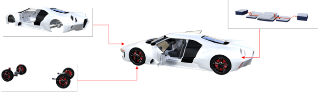

Digital Twins
Digital Twins are complete representations of any physical or non-physical real-world asset. They represent the current state of the asset though a harmonized interface, which covers for example the state of an asset, and sensor values. Digital twins also provide simulation models that predict asset behavior in a particular situation, provide evidences for substantiated decisions, and enable what-if analysis.

The Asset Administration shell is an agreed technical foundation for digital twins. AAS sub models tailor the generic AAS to the specific needs of assets, and provide access to specific properties, states, services, and simulation models.
Digital Supply Chains
Complex products consist of numerous components from different suppliers. Next-generation use-cases, such as the digital product passport and automated calculation of CO2 footprint requires an information exchange along the value chains. This requires a harmonized interface, and agreed languages and data models. The Eclipse BaSyx Industry 4.0 middleware therefore uses the Asset Administration Shell as foundation for ist digital twins, which has been standardized as IEC 63278-1 ED1.

Asset Administration Shells (AAS)
Most existing automation systems communicate using proprietary protocols and data models. If for example a sensor is to be replaced, all dependent systems need to be updated as well to implement for example the characteristic curve of a new sensor.
Eclipse BaSyx integrates all assets with their Asset administration Shell (AAS). The AAS is a unified representation for all relevant physical and non-physical assets, e.g. for products, orders, processes, devices, certificates, ERP/MES Systems, and everything else that is relevant.
Every AAS is represented by at least one digital ID. This might be any unique ID, for example a URI, or the serial number of the represented real-world asset. The same AAS can be reached via multiple IDs, which enables additional IDs that are e.g. bound to a role in a factory.
AAS Submodels
Different types of assets require and provide different kinds of information and services. Therefore, also the Digital Twin of an asset must represent its different aspects. Asset Administration Shell sub models define data and service models for specific kinds of data and services, for example to represent a specific kind of sensor.
A single AAS may define any number of sub models, but every sub model always belongs to exactly one AAS.
Currently, most AAS sub models that are created are created for a specific purpose. However, ongoing standardization activities cover copmmonly used sub models and ensure a common understanding of a subset of important sub models that need to be exchanged along value chains.

AAS – Referencing, Exchange, and Interoperability
Optimizing production processes along value chains requires exchange of digital data. As Eclipse BaSyx represents all relevant assets with Asset Administration Shells, one AAS needs to refer to other AAS or AAS submodels. Therefore, AAS support references that refer to other AAS and sub models by a unique ID. This enables e.g. a product to refer to all devices, processes, and plants that were involved in its manufacturing.
As data exchange also requires a common understanding of data, the AAS and its sub models enable semantic tagging. Semantic tags provide a meaning to properties and services. By adding a semantic tag, one ensures that data is understood correctly, even without detailed knowledge about underlying data models